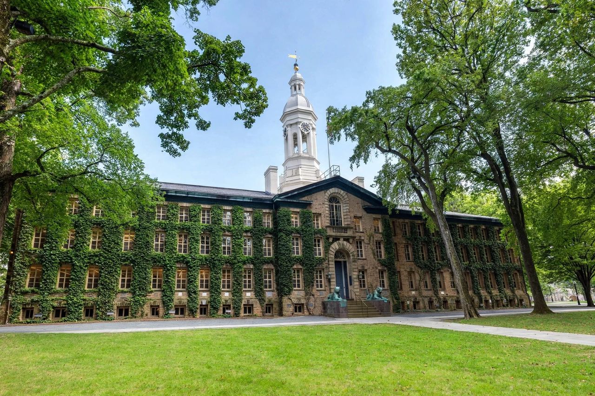

From Wikipedia, the free encyclopedia
| Princeton University | |
|---|---|
 | |
| Motto | Dei Sub Numine Viget (Latin) "Under God's power she flourishes" |
| Established | 1746; 280 years ago |
| Type | Private research university |
| Endowment | $34.1 billion (2024) |
| President | Christopher Eisgruber |
| Location | Princeton, New Jersey, United States |
| Campus | Suburban, 600 acres (240 ha) |
| Colors | Princeton orange and black |
| Mascot | The Tiger |
Princeton University is a private Ivy League research university in Princeton, New Jersey. Founded in 1746 in Elizabeth as the College of New Jersey, Princeton is the fourth-oldest institution of higher education in the United States and one of the nine colonial colleges chartered before the American Revolution. The institution moved to Newark in 1747 and then to the current campus nine years later. It officially became a university in 1896 and was subsequently renamed Princeton University.
The university is governed by the Trustees of Princeton University and has an endowment of $34.1 billion, the largest endowment per student in the United States. Princeton provides undergraduate and graduate instruction in the humanities, social sciences, natural sciences, and engineering to approximately 8,500 students on its 600-acre (240-hectare) main campus. It also has the Princeton Plasma Physics Laboratory and maintains close connections with the neighboring Institute for Advanced Study, where Albert Einstein worked after emigrating from Germany.
Princeton was founded by New Light Presbyterians under the name College of New Jersey, with the support of Governor Jonathan Belcher. Classes began in Elizabeth, New Jersey, in 1747. The college moved to its permanent home in Princeton in 1756, occupying Nassau Hall, which was then the largest stone building in the colonies. During the American Revolutionary War, the campus was occupied by both British and American forces, and the Battle of Princeton was fought on nearby fields in January 1777. Nassau Hall still bears a scar from a cannonball fired during the battle.
Under president James McCosh (1868–1888) the curriculum was greatly expanded, and in 1896, at the institution's sesquicentennial, the college was renamed Princeton University. Woodrow Wilson, president from 1902, reorganized undergraduate life around the preceptorial system and a residential college plan; he later became President of the United States. Princeton admitted its first women undergraduates in 1969.
Princeton offers bachelor's degrees through the undergraduate college and graduate degrees through the Graduate School, the Princeton School of Public and International Affairs, the School of Engineering and Applied Science, and the School of Architecture. The university is noted for its senior thesis requirement, under which nearly all undergraduates complete an independent research project in their final year. Its library system holds more than 14 million items, with Firestone Library serving as the main research library.
The main campus sits on about 600 acres in the borough of Princeton. Its architecture blends Collegiate Gothic, Georgian, and modernist styles; notable buildings include Nassau Hall, Blair Hall, the Princeton University Chapel, and the Lewis Center for the Arts. The campus is home to the Princeton University Art Museum and borders Lake Carnegie, created by damming the Millstone River for the rowing team.
Princeton alumni include two U.S. presidents (James Madison and Woodrow Wilson), numerous Supreme Court justices, and figures such as Jeff Bezos, Michelle Obama, chemist and computing pioneer Alan Turing (PhD 1938), and economist John Nash, who did much of his later work at the university. As of recent counts, 76 Nobel laureates have been affiliated with Princeton as alumni, faculty, or researchers.